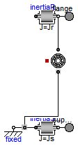
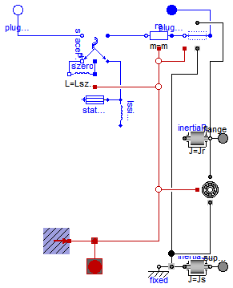
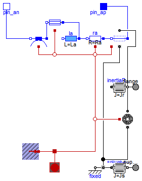

Extends from Modelica.Icons.InterfacesPackage (Icon for packages containing interfaces).
| Name | Description |
|---|---|
| Connector for Space Phasors | |
| PartialBasicMachine | Partial model for all machines |
| Partial model for induction machine | |
| Interfaces and partial models for induction machines | |
| PartialBasicDCMachine | Partial model for DC machine |
| Thermal ports of DC machines | |
| Partial model of threephase transformer | |
| Thermal port of transformers | |
| Power balance of transformers | |
| Shaft and support |
 Modelica.Electrical.Machines.Interfaces.SpacePhasor
Modelica.Electrical.Machines.Interfaces.SpacePhasor
| Type | Name | Description |
|---|---|---|
| Voltage | v_[2] | 1=real, 2=imaginary part [V] |
| flow Current | i_[2] | 1=real, 2=imaginary part [A] |
connector SpacePhasor "Connector for Space Phasors" Modelica.SIunits.Voltage v_[2] "1=real, 2=imaginary part"; flow Modelica.SIunits.Current i_[2] "1=real, 2=imaginary part";end SpacePhasor;

Extends from Machines.Icons.TransientMachine.
| Type | Name | Default | Description |
|---|---|---|---|
| Inertia | Jr | Rotor's moment of inertia [kg.m2] | |
| Boolean | useSupport | false | Enable / disable (=fixed stator) support |
| Inertia | Js | Stator's moment of inertia [kg.m2] | |
| Boolean | useThermalPort | false | Enable / disable (=fixed temperatures) thermal port |
| Losses | |||
| FrictionParameters | frictionParameters | Friction losses | |
| Type | Name | Description |
|---|---|---|
| Flange_a | flange | Shaft |
| Flange_a | support | Support at which the reaction torque is acting |
partial model PartialBasicMachine "Partial model for all machines"
extends Machines.Icons.TransientMachine;
constant Modelica.SIunits.Angle pi=Modelica.Constants.pi;
parameter Modelica.SIunits.Inertia Jr "Rotor's moment of inertia";
parameter Boolean useSupport=false "Enable / disable (=fixed stator) support";
parameter Modelica.SIunits.Inertia Js(start=Jr) "Stator's moment of inertia";
parameter Boolean useThermalPort=false
"Enable / disable (=fixed temperatures) thermal port";
parameter Machines.Losses.FrictionParameters frictionParameters
"Friction losses";
output Modelica.SIunits.Angle phiMechanical = flange.phi-internalSupport.phi
"Mechanical angle of rotor against stator";
output Modelica.SIunits.AngularVelocity wMechanical(displayUnit="1/min") = der(phiMechanical)
"Mechanical angular velocity of rotor against stator";
output Modelica.SIunits.Torque tauElectrical = inertiaRotor.flange_a.tau
"Electromagnetic torque";
output Modelica.SIunits.Torque tauShaft = -flange.tau "Shaft torque";
Modelica.Mechanics.Rotational.Interfaces.Flange_a flange "Shaft";
Modelica.Mechanics.Rotational.Components.Inertia inertiaRotor(final J=Jr);
Modelica.Mechanics.Rotational.Interfaces.Flange_a support if useSupport
"Support at which the reaction torque is acting";
Modelica.Mechanics.Rotational.Components.Inertia inertiaStator(final J=Js);
Modelica.Mechanics.Rotational.Components.Fixed fixed if (not useSupport);
Machines.Losses.Friction friction(final frictionParameters=frictionParameters);
protected
Modelica.Mechanics.Rotational.Interfaces.Support internalSupport;
equation
connect(inertiaRotor.flange_b, flange);
connect(inertiaStator.flange_b, support);
connect(internalSupport, fixed.flange);
connect(internalSupport, inertiaStator.flange_a);
connect(inertiaRotor.flange_b, friction.flange);
connect(friction.support, internalSupport);
end PartialBasicMachine;

Extends from PartialBasicMachine (Partial model for all machines).
| Type | Name | Default | Description |
|---|---|---|---|
| Integer | p | Number of pole pairs (Integer) | |
| Frequency | fsNominal | Nominal frequency [Hz] | |
| Boolean | useSupport | false | Enable / disable (=fixed stator) support |
| Inertia | Js | Stator's moment of inertia [kg.m2] | |
| Boolean | useThermalPort | false | Enable / disable (=fixed temperatures) thermal port |
| PartialPowerBalanceInductionMachines | powerBalance | redeclare output Machines.In... | Power balance |
| PartialThermalPortInductionMachines | thermalPort | redeclare Machines.Interface... | |
| PartialThermalAmbientInductionMachines | thermalAmbient | redeclare Machines.Interface... | |
| Operational temperatures | |||
| Temperature | TsOperational | Operational temperature of stator resistance [K] | |
| Nominal resistances and inductances | |||
| Resistance | Rs | Stator resistance per phase at TRef [Ohm] | |
| Temperature | TsRef | Reference temperature of stator resistance [K] | |
| LinearTemperatureCoefficient20 | alpha20s | Temperature coefficient of stator resistance at 20 degC [1/K] | |
| Inductance | Lszero | Lssigma | Stator zero sequence inductance [H] |
| Inductance | Lssigma | Stator stray inductance per phase [H] | |
| Losses | |||
| CoreParameters | statorCoreParameters | Stator core losses | |
| StrayLoadParameters | strayLoadParameters | Stray load losses | |
| Type | Name | Description |
|---|---|---|
| Flange_a | flange | Shaft |
| Flange_a | support | Support at which the reaction torque is acting |
| PositivePlug | plug_sp | Positive stator plug |
| NegativePlug | plug_sn | Negative stator plug |
| PartialThermalPortInductionMachines | thermalPort |
partial model PartialBasicInductionMachine
"Partial model for induction machine"
final parameter Integer m=3 "Number of phases";
parameter Integer p(min=1, start=2) "Number of pole pairs (Integer)";
parameter Modelica.SIunits.Frequency fsNominal(start=50) "Nominal frequency";
parameter Modelica.SIunits.Temperature TsOperational(start=293.15)
"Operational temperature of stator resistance";
parameter Modelica.SIunits.Resistance Rs(start=0.03)
"Stator resistance per phase at TRef";
parameter Modelica.SIunits.Temperature TsRef(start=293.15)
"Reference temperature of stator resistance";
parameter Machines.Thermal.LinearTemperatureCoefficient20 alpha20s(
start=0) "Temperature coefficient of stator resistance at 20 degC";
parameter Modelica.SIunits.Inductance Lszero=Lssigma
"Stator zero sequence inductance";
parameter Modelica.SIunits.Inductance Lssigma(start=3*(1 - sqrt(1 - 0.0667))/(2*pi*fsNominal))
"Stator stray inductance per phase";
extends PartialBasicMachine(Jr(start=0.29),
frictionParameters(wRef(start=2*pi*fsNominal/p)));
parameter Machines.Losses.CoreParameters statorCoreParameters(
final m=3,
VRef(start=100),
wRef=2*pi*fsNominal) "Stator core losses";
parameter Machines.Losses.StrayLoadParameters strayLoadParameters(
IRef(start=100), wRef(start=2*pi*fsNominal/p)) "Stray load losses";
replaceable output Machines.Interfaces.InductionMachines.PartialPowerBalanceInductionMachines
powerBalance(
final powerStator = Machines.SpacePhasors.Functions.activePower(vs, is),
final powerMechanical = wMechanical*tauShaft,
final powerInertiaStator = inertiaStator.J*inertiaStator.a*inertiaStator.w,
final powerInertiaRotor = inertiaRotor.J*inertiaRotor.a*inertiaRotor.w,
final lossPowerStatorWinding = -sum(rs.heatPort.Q_flow),
final lossPowerStatorCore = -statorCore.heatPort.Q_flow,
final lossPowerStrayLoad = -strayLoad.heatPort.Q_flow,
final lossPowerFriction = -friction.heatPort.Q_flow) "Power balance";
output Modelica.SIunits.Voltage vs[m] = plug_sp.pin.v - plug_sn.pin.v
"Stator instantaneous voltages";
output Modelica.SIunits.Current is[m] = plug_sp.pin.i
"Stator instantaneous currents";
output Modelica.SIunits.Current i_0_s( stateSelect=StateSelect.prefer) = spacePhasorS.zero.i
"Stator zero-sequence current";
// to be defined in model that extends from this partial (since airgap isn't included here)
input Modelica.SIunits.Current idq_ss[2]
"Stator space phasor current / stator fixed frame";
input Modelica.SIunits.Current idq_sr[2](each stateSelect=StateSelect.prefer)
"Stator space phasor current / rotor fixed frame";
input Modelica.SIunits.Current idq_rs[2]
"Rotor space phasor current / stator fixed frame";
input Modelica.SIunits.Current idq_rr[2](each stateSelect=StateSelect.prefer)
"Rotor space phasor current / rotor fixed frame";
Modelica.Electrical.MultiPhase.Interfaces.PositivePlug plug_sp(final m=m)
"Positive stator plug";
Modelica.Electrical.MultiPhase.Interfaces.NegativePlug plug_sn(final m=m)
"Negative stator plug";
Modelica.Electrical.MultiPhase.Basic.Resistor rs(
final m=m,
final R=fill(Rs, m),
final T_ref=fill(TsRef, m),
final alpha=fill(Machines.Thermal.convertAlpha(alpha20s, TsRef), m),
final useHeatPort=true,
final T=fill(TsRef,m));
Machines.BasicMachines.Components.Inductor lssigma(final L=fill(Lssigma, 2));
Modelica.Electrical.Analog.Basic.Inductor lszero(final L=Lszero);
Machines.Losses.InductionMachines.Core statorCore(final coreParameters=statorCoreParameters);
Machines.SpacePhasors.Components.SpacePhasor spacePhasorS(final turnsRatio=1);
Machines.Losses.InductionMachines.StrayLoad strayLoad(final strayLoadParameters=
strayLoadParameters);
replaceable Machines.Interfaces.InductionMachines.PartialThermalPortInductionMachines
thermalPort(final m=m) if useThermalPort;
replaceable Machines.Interfaces.InductionMachines.PartialThermalAmbientInductionMachines
thermalAmbient(
final useTemperatureInputs=false, final Ts=TsOperational,
final m=m) if not useThermalPort;
protected
replaceable Machines.Interfaces.InductionMachines.PartialThermalPortInductionMachines
internalThermalPort(final m=m);
equation
connect(spacePhasorS.plug_n, plug_sn);
connect(thermalPort, internalThermalPort);
connect(thermalAmbient.thermalPort, internalThermalPort);
connect(strayLoad.plug_n, rs.plug_p);
connect(strayLoad.plug_p, plug_sp);
connect(strayLoad.flange, inertiaRotor.flange_b);
connect(strayLoad.support, internalSupport);
connect(spacePhasorS.plug_p, rs.plug_n);
connect(spacePhasorS.zero,lszero. p);
connect(lszero.n, spacePhasorS.ground);
connect(spacePhasorS.spacePhasor, lssigma.spacePhasor_a);
connect(statorCore.spacePhasor, lssigma.spacePhasor_a);
connect(statorCore.heatPort, internalThermalPort.heatPortStatorCore);
connect(strayLoad.heatPort, internalThermalPort.heatPortStrayLoad);
connect(rs.heatPort, internalThermalPort.heatPortStatorWinding);
connect(friction.heatPort, internalThermalPort.heatPortFriction);
end PartialBasicInductionMachine;

Extends from PartialBasicMachine (Partial model for all machines).
| Type | Name | Default | Description |
|---|---|---|---|
| Boolean | useSupport | false | Enable / disable (=fixed stator) support |
| Inertia | Js | Stator's moment of inertia [kg.m2] | |
| Boolean | useThermalPort | false | Enable / disable (=fixed temperatures) thermal port |
| PartialPowerBalanceDCMachines | powerBalance | redeclare output Machines.In... | Power balance |
| PartialThermalPortDCMachines | thermalPort | redeclare Machines.Interface... | |
| PartialThermalAmbientDCMachines | thermalAmbient | redeclare Machines.Interface... | |
| Operational temperatures | |||
| Temperature | TaOperational | Operational armature temperature [K] | |
| Nominal parameters | |||
| Voltage | VaNominal | Nominal armature voltage [V] | |
| Current | IaNominal | Nominal armature current (>0..Motor, <0..Generator) [A] | |
| AngularVelocity | wNominal | Nominal speed [rad/s] | |
| Temperature | TaNominal | Nominal armature temperature [K] | |
| Nominal resistances and inductances | |||
| Resistance | Ra | Armature resistance at TRef [Ohm] | |
| Temperature | TaRef | Reference temperature of armature resistance [K] | |
| LinearTemperatureCoefficient20 | alpha20a | Temperature coefficient of armature resistance [1/K] | |
| Inductance | La | Armature inductance [H] | |
| Losses | |||
| CoreParameters | coreParameters | Armature core losses | |
| StrayLoadParameters | strayLoadParameters | Stray load losses | |
| BrushParameters | brushParameters | Brush losses | |
| Type | Name | Description |
|---|---|---|
| Flange_a | flange | Shaft |
| Flange_a | support | Support at which the reaction torque is acting |
| PositivePin | pin_ap | Positive armature pin |
| NegativePin | pin_an | Negative armature pin |
| PartialThermalPortDCMachines | thermalPort |
partial model PartialBasicDCMachine "Partial model for DC machine"
parameter Modelica.SIunits.Temperature TaOperational(start=293.15)
"Operational armature temperature";
parameter Modelica.SIunits.Voltage VaNominal(start=100)
"Nominal armature voltage";
parameter Modelica.SIunits.Current IaNominal(start=100)
"Nominal armature current (>0..Motor, <0..Generator)";
parameter Modelica.SIunits.AngularVelocity wNominal(displayUnit="1/min", start=1425*2*pi/60)
"Nominal speed";
parameter Modelica.SIunits.Temperature TaNominal(start=293.15)
"Nominal armature temperature";
parameter Modelica.SIunits.Resistance Ra(start=0.05)
"Armature resistance at TRef";
parameter Modelica.SIunits.Temperature TaRef(start=293.15)
"Reference temperature of armature resistance";
parameter Machines.Thermal.LinearTemperatureCoefficient20 alpha20a(
start=0) "Temperature coefficient of armature resistance";
parameter Modelica.SIunits.Inductance La(start=0.0015) "Armature inductance";
extends PartialBasicMachine(Jr(start=0.15),
frictionParameters(wRef=wNominal));
parameter Machines.Losses.CoreParameters coreParameters(final m=1,
VRef=ViNominal, wRef=wNominal) "Armature core losses";
parameter Machines.Losses.StrayLoadParameters strayLoadParameters(
IRef=IaNominal, wRef=wNominal) "Stray load losses";
parameter Machines.Losses.BrushParameters brushParameters(
ILinear=0.01*IaNominal) "Brush losses";
replaceable output Machines.Interfaces.DCMachines.PartialPowerBalanceDCMachines
powerBalance(
final powerArmature = va*ia,
final powerMechanical = wMechanical*tauShaft,
final powerInertiaStator = inertiaStator.J*inertiaStator.a*inertiaStator.w,
final powerInertiaRotor = inertiaRotor.J*inertiaRotor.a*inertiaRotor.w,
final lossPowerArmature = -ra.heatPort.Q_flow,
final lossPowerCore = -core.heatPort.Q_flow,
final lossPowerStrayLoad = -strayLoad.heatPort.Q_flow,
final lossPowerFriction = -friction.heatPort.Q_flow,
final lossPowerBrush = -brush.heatPort.Q_flow) "Power balance";
output Modelica.SIunits.Voltage va = pin_ap.v-pin_an.v "Armature voltage";
output Modelica.SIunits.Current ia = pin_ap.i "Armature current";
Modelica.Electrical.Analog.Interfaces.PositivePin pin_ap
"Positive armature pin";
Modelica.Electrical.Analog.Interfaces.NegativePin pin_an
"Negative armature pin";
Modelica.Electrical.Analog.Basic.Resistor ra(
final R=Ra,
final T_ref=TaRef,
final alpha=Machines.Thermal.convertAlpha(alpha20a, TaRef),
final useHeatPort=true,
final T=TaRef);
Machines.BasicMachines.Components.InductorDC la(final L=La,
final quasiStationary = quasiStationary);
Machines.Losses.DCMachines.Brush brush(final brushParameters=brushParameters);
Machines.Losses.DCMachines.Core core(final coreParameters=coreParameters);
Machines.Losses.DCMachines.StrayLoad strayLoad(final strayLoadParameters=strayLoadParameters);
replaceable Machines.Interfaces.DCMachines.PartialThermalPortDCMachines
thermalPort if useThermalPort;
replaceable Machines.Interfaces.DCMachines.PartialThermalAmbientDCMachines
thermalAmbient(
final useTemperatureInputs=false, final Ta=TaOperational) if not useThermalPort;
protected
constant Boolean quasiStationary=false "No electrical transients if true";
parameter Modelica.SIunits.Voltage ViNominal "Nominal induced Voltage";
parameter Modelica.SIunits.MagneticFlux psi_eNominal "Nominal magnetic flux";
parameter Real turnsRatio = ViNominal/(wNominal*psi_eNominal)
"Ratio of armature turns over number of turns of the excitation winding";
replaceable Machines.Interfaces.DCMachines.PartialThermalPortDCMachines
internalThermalPort;
equation
assert(ViNominal > Modelica.Constants.eps, "VaNominal has to be > (Ra[+Rse])*IaNominal");
connect(la.p,ra. n);
connect(thermalPort, internalThermalPort);
connect(thermalAmbient.thermalPort, internalThermalPort);
connect(brush.n, pin_an);
connect(pin_ap, strayLoad.p);
connect(strayLoad.n, ra.p);
connect(strayLoad.flange, inertiaRotor.flange_b);
connect(strayLoad.support, internalSupport);
connect(la.p, core.p);
connect(core.n, brush.p);
connect(core.heatPort, internalThermalPort.heatPortCore);
connect(brush.heatPort, internalThermalPort.heatPortBrush);
connect(strayLoad.heatPort, internalThermalPort.heatPortStrayLoad);
connect(friction.heatPort, internalThermalPort.heatPortFriction);
connect(ra.heatPort, internalThermalPort.heatPortArmature);
end PartialBasicDCMachine;
 Modelica.Electrical.Machines.Interfaces.PartialBasicTransformer
Modelica.Electrical.Machines.Interfaces.PartialBasicTransformer

| turns ratio n | 1 | |
| nominal frequency fNominal | 50 | Hz |
| nominal voltage per phase | 100 | V RMS |
| nominal current per phase | 100 | A RMS |
| nominal apparent power | 30 | kVA |
| primary resistance R1 | 0.005 | Ohm per phase at reference temperature |
| reference temperature T1Ref | 20 | °C |
| temperature coefficient alpha20_1 | 0 | 1/K |
| primary stray inductance L1sigma | 78E-6 | H per phase |
| secondary resistance R2 | 0.005 | Ohm per phase at reference temperature |
| reference temperature T2Ref | 20 | °C |
| temperature coefficient alpha20_2 | 0 | 1/K |
| secondary stray inductance L2sigma | 78E-6 | H per phase |
| operational temperature T1Operational | 20 | °C |
| operational temperature T2Operational | 20 | °C |
| These values give the operational parameters: | ||
| nominal voltage drop | 0.05 | p.u. |
| nominal copper losses | 300 | W |
Extends from Machines.Icons.TransientTransformer.
| Type | Name | Default | Description |
|---|---|---|---|
| Real | n | Ratio primary voltage (line-to-line) / secondary voltage (line-to-line) | |
| Boolean | useThermalPort | false | Enable / disable (=fixed temperatures) thermal port |
| Operational temperatures | |||
| Temperature | T1Operational | Operational temperature of primary resistance [K] | |
| Temperature | T2Operational | Operational temperature of secondary resistance [K] | |
| Nominal resistances and inductances | |||
| Resistance | R1 | Primary resistance per phase at TRef [Ohm] | |
| Temperature | T1Ref | Reference temperature of primary resistance [K] | |
| LinearTemperatureCoefficient20 | alpha20_1 | Temperature coefficient of primary resistance at 20 degC [1/K] | |
| Inductance | L1sigma | Primary stray inductance per phase [H] | |
| Resistance | R2 | Secondary resistance per phase at TRef [Ohm] | |
| Temperature | T2Ref | Reference temperature of secondary resistance [K] | |
| LinearTemperatureCoefficient20 | alpha20_2 | Temperature coefficient of secondary resistance at 20 degC [1/K] | |
| Inductance | L2sigma | Secondary stray inductance per phase [H] | |
| Type | Name | Description |
|---|---|---|
| PositivePlug | plug1 | Primary plug |
| NegativePlug | plug2 | Secondary plug |
| ThermalPortTransformer | thermalPort |
partial model PartialBasicTransformer
"Partial model of threephase transformer"
extends Machines.Icons.TransientTransformer;
final parameter Integer m(min=1) = 3 "Number of phases";
constant String VectorGroup="Yy00";
parameter Real n(start=1)
"Ratio primary voltage (line-to-line) / secondary voltage (line-to-line)";
parameter Modelica.SIunits.Resistance R1(start=5E-3/(if C1=="D" then 1 else 3))
"Primary resistance per phase at TRef";
parameter Modelica.SIunits.Temperature T1Ref(start=293.15)
"Reference temperature of primary resistance";
parameter Machines.Thermal.LinearTemperatureCoefficient20 alpha20_1(
start=0)
"Temperature coefficient of primary resistance at 20 degC";
parameter Modelica.SIunits.Inductance L1sigma(start=78E-6/(if C1=="D" then 1 else 3))
"Primary stray inductance per phase";
parameter Modelica.SIunits.Resistance R2(start=5E-3/(if C2=="d" then 1 else 3))
"Secondary resistance per phase at TRef";
parameter Modelica.SIunits.Temperature T2Ref(start=293.15)
"Reference temperature of secondary resistance";
parameter Machines.Thermal.LinearTemperatureCoefficient20 alpha20_2(start=0)
"Temperature coefficient of secondary resistance at 20 degC";
parameter Modelica.SIunits.Inductance L2sigma(start=78E-6/(if C2=="d" then 1 else 3))
"Secondary stray inductance per phase";
parameter Boolean useThermalPort=false
"Enable / disable (=fixed temperatures) thermal port";
parameter Modelica.SIunits.Temperature T1Operational(start=293.15)
"Operational temperature of primary resistance";
parameter Modelica.SIunits.Temperature T2Operational(start=293.15)
"Operational temperature of secondary resistance";
output Machines.Interfaces.PowerBalanceTransformer powerBalance(
final power1 = Machines.SpacePhasors.Functions.activePower(v1, +i1),
final power2 = Machines.SpacePhasors.Functions.activePower(v2, -i2),
final lossPower1 = -sum(r1.heatPort.Q_flow),
final lossPower2 = -sum(r2.heatPort.Q_flow),
final lossPowerCore = 0) "Power balance";
output Modelica.SIunits.Voltage v1[m]=plug1.pin.v "Primary voltage";
output Modelica.SIunits.Current i1[m]=plug1.pin.i "Primary current";
output Modelica.SIunits.Voltage v2[m]=plug2.pin.v "Secondary voltage";
output Modelica.SIunits.Current i2[m]=plug2.pin.i "Secondary current";
protected
constant String C1 = Modelica.Utilities.Strings.substring(VectorGroup,1,1);
constant String C2 = Modelica.Utilities.Strings.substring(VectorGroup,2,2);
parameter Real ni=n*(if C2=="z" then sqrt(3) else 2)*(if C2=="d" then 1 else sqrt(3))/(if C1=="D" then 1 else sqrt(3));
public
Modelica.Electrical.MultiPhase.Interfaces.PositivePlug plug1(final m=m)
"Primary plug";
Modelica.Electrical.MultiPhase.Interfaces.NegativePlug plug2(final m=m)
"Secondary plug";
Modelica.Electrical.MultiPhase.Basic.Resistor r1(
final m=m,
final R=fill(R1,m),
final T_ref=fill(T1Ref,m),
final alpha=fill(Machines.Thermal.convertAlpha(alpha20_1, T1Ref), m),
final useHeatPort=true,
final T=fill(T1Ref,m));
Modelica.Electrical.MultiPhase.Basic.Inductor l1sigma(final m=m, final L=fill(L1sigma, m));
Modelica.Electrical.MultiPhase.Basic.Resistor r2(
final m=m,
final R=fill(R2,m),
final T_ref=fill(T2Ref,m),
final alpha=fill(Machines.Thermal.convertAlpha(alpha20_2, T2Ref), m),
final useHeatPort=true,
final T=fill(T2Ref,m));
Modelica.Electrical.MultiPhase.Basic.Inductor l2sigma(final m=m, final L=fill(L2sigma, m));
Machines.BasicMachines.Components.IdealCore core(
final m=m,
final n12=ni,
final n13=ni);
Machines.Interfaces.ThermalPortTransformer thermalPort(final m=m) if useThermalPort;
Machines.Thermal.ThermalAmbientTransformer thermalAmbient(final useTemperatureInputs=false,
final T1=T1Operational,
final T2=T2Operational,
final m=m) if not useThermalPort;
protected
Machines.Interfaces.ThermalPortTransformer internalThermalPort(final m=m);
equation
connect(r1.plug_n,l1sigma.plug_p);
connect(l2sigma.plug_n,r2.plug_p);
connect(plug1, r1.plug_p);
connect(r2.plug_n, plug2);
connect(thermalPort, internalThermalPort);
connect(thermalAmbient.thermalPort, internalThermalPort);
connect(r1.heatPort, internalThermalPort.heatPort1);
connect(r2.heatPort, internalThermalPort.heatPort2);
end PartialBasicTransformer;
 Modelica.Electrical.Machines.Interfaces.ThermalPortTransformer
Modelica.Electrical.Machines.Interfaces.ThermalPortTransformer
| Type | Name | Default | Description |
|---|---|---|---|
| Integer | m | 3 | number of phases |
| Type | Name | Description |
|---|---|---|
| Integer | m | number of phases |
| HeatPort_a | heatPort1[m] | Heat port of primary windings |
| HeatPort_a | heatPort2[m] | Heat port of secondary windings |
| HeatPort_a | heatPortCore | Heat port of (optional) core losses |
connector ThermalPortTransformer "Thermal port of transformers" parameter Integer m=3 "number of phases";Modelica.Thermal.HeatTransfer.Interfaces.HeatPort_a heatPort1[m] "Heat port of primary windings"; Modelica.Thermal.HeatTransfer.Interfaces.HeatPort_a heatPort2[m] "Heat port of secondary windings"; Modelica.Thermal.HeatTransfer.Interfaces.HeatPort_a heatPortCore "Heat port of (optional) core losses"; end ThermalPortTransformer;
 Modelica.Electrical.Machines.Interfaces.PowerBalanceTransformer
Modelica.Electrical.Machines.Interfaces.PowerBalanceTransformer
Extends from Modelica.Icons.Record (Icon for records).
record PowerBalanceTransformer "Power balance of transformers"
extends Modelica.Icons.Record;
Modelica.SIunits.Power power1 "Primary power";
Modelica.SIunits.Power power2 "Secondary power";
Modelica.SIunits.Power lossPowerTotal = lossPower1 + lossPower2 + lossPowerCore
"Total loss power";
Modelica.SIunits.Power lossPower1 "Primary copper losses";
Modelica.SIunits.Power lossPower2 "Secondary copper losses";
Modelica.SIunits.Power lossPowerCore "Core losses";
end PowerBalanceTransformer;
 Modelica.Electrical.Machines.Interfaces.FlangeSupport
Modelica.Electrical.Machines.Interfaces.FlangeSupport
This partial model defines shaft and housing connector for loss models.
Positive torque tau acts as braking torque.
| Type | Name | Description |
|---|---|---|
| Flange_a | flange | Shaft end |
| Flange_a | support | Housing and support |
partial model FlangeSupport "Shaft and support"Modelica.Mechanics.Rotational.Interfaces.Flange_a flange "Shaft end"; Modelica.Mechanics.Rotational.Interfaces.Flange_a support "Housing and support"; Modelica.SIunits.Angle phi "Angle between shaft and support"; Modelica.SIunits.Torque tau "Torque"; Modelica.SIunits.AngularVelocity w "Relative angular velocity of flange and support"; equation phi = flange.phi - support.phi; w = der(phi); tau = -flange.tau; tau = support.tau;end FlangeSupport;